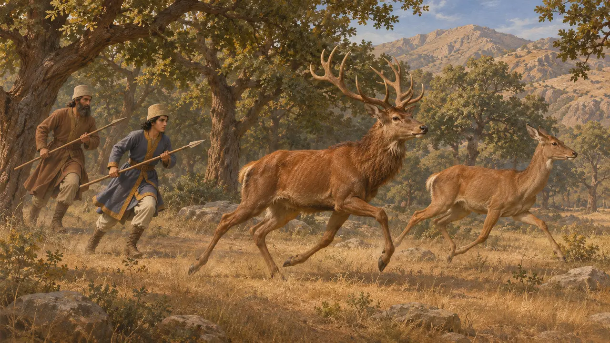
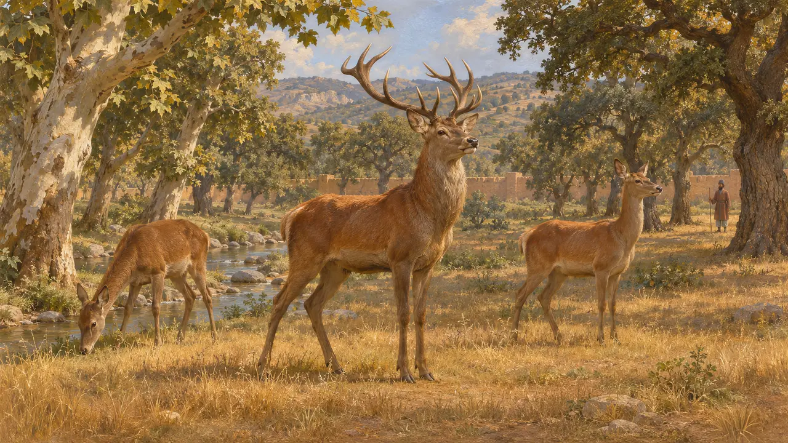
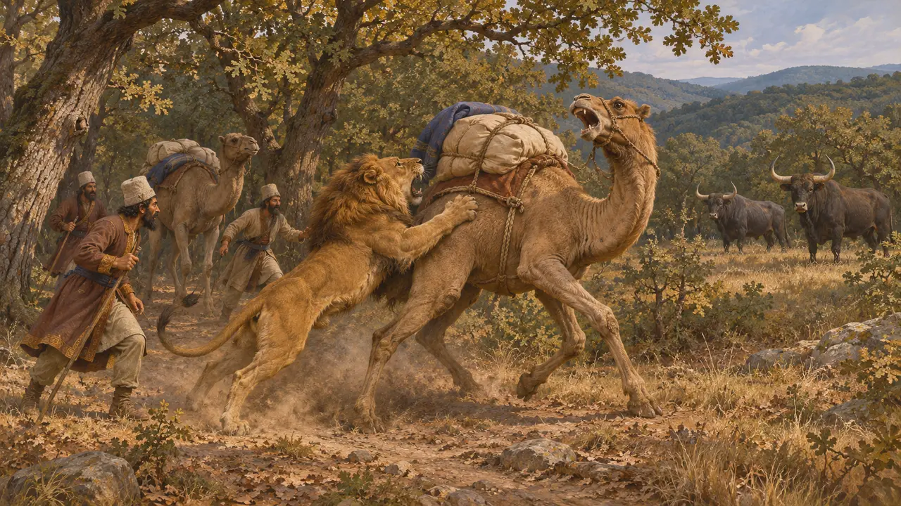
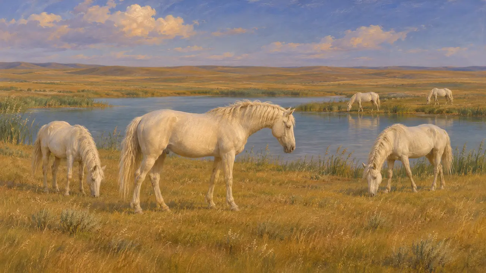

Cervos
Os cervos nos bosques e terrenos de caça do mundo persa, séculos VI-V AEC
No jogo: Nível 6: A Ponte de Barcos, Nível 7: Sardes em Chamas, Nível 8: A Baía de Maratona, Nível 9: O Canal, Nível 10: Os Portões Quentes, Nível 11: O Final
Os cervos faziam parte da caça de floresta das terras governadas pelos persas, dos bosques dos Bálcãs à Anatólia. As menções que sobreviveram são gregas e, em sua maioria, descrevem a caça em termos gerais. Os cervos raramente são destacados, de modo que o que se pode dizer sobre eles se apoia em grande parte no habitat e em imagens gregas posteriores da caça persa.
No jogo: Os cervos são desenhados como cenário nas fases de Atos, Istro, Maratona, Plateia, Sardes e Termópilas, em terras que a cidade não ocupou. Nenhuma regra os lê. Sua posição é uma escolha de design, não um registro documentado.

Os cervos no quadro da caça persa de Xenofonte
Relato antigoXenofonte, escrevendo no século IV, faz o jovem Ciro caçar cervos, gazelas, carneiros selvagens e asnos selvagens. A cena pertence a um relato idealizado da educação de um príncipe e não é um relato da vida do próprio Ciro. Ela mostra como um escritor grego de uma época posterior imaginava a caça persa e sua ligação com o treinamento para a guerra.
Xenophon, Cyropaedia 1.4.7

Parques e o paraíso persa
Relato antigoXenofonte descreve um parque em Celenas no qual Ciro, o Jovem, mantinha e caçava animais selvagens. A palavra paraíso é de origem iraniana e chegou ao grego por meio de tais descrições. Xenofonte escreve por volta de 400 AEC, de modo que isso mostra a prática aquemênida tardia, e o conteúdo dos parques em 559 AEC a 479 AEC não está registrado.
Xenophon, Anabasis 1.2.7

Caça na marcha de Xerxes pela Trácia
Relato antigoHeródoto diz que leões atacaram os camelos de bagagem do exército de Xerxes na região entre o Nesto e o Aqueloo, e que bois selvagens também viviam ali. Ele não menciona cervos nessa passagem. Os cervos na Trácia são, portanto, uma inferência a partir do cenário de floresta, e não uma afirmação dessa fonte.
Herodotus 7.125-126

Cavalos selvagens na estepe cita
Relato antigoHeródoto diz que cavalos brancos selvagens pastavam junto ao lago na nascente do Hípanis. Este é o aviso de jogo mais próximo para a região de estepe na fase do Istro, e trata de cavalos, não de cervos. Nenhum texto antigo consultado aqui registra cervos no Istro, em Sardes ou em Maratona, de modo que sua presença nesses lugares se baseia apenas no habitat.
Herodotus 4.52
Fontes
- Xenophon, Cyropaedia 1.4.7
- Xenophon, Anabasis 1.2.7
- Herodotus 7.125-126
- Herodotus 4.52
- P. Briant, From Cyrus to Alexander, 2002